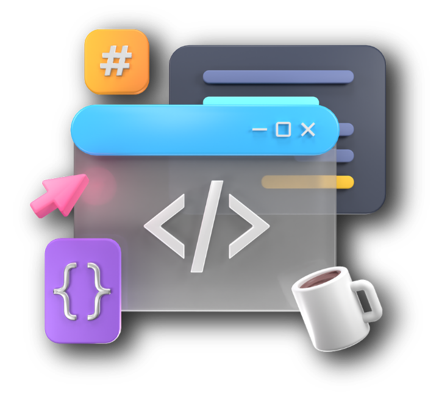

¡Hola, soy Fátima Domínguez!
Bienvenid@ a
mi portafolio

Sobre mí

Soy estudiante de Ingeniería en Desarrollo y Gestión de Software y actualmente curso el onceavo cuatrimestre. También soy instructora en Tecnochicas. Me apasiona transformar ideas en aplicaciones multiplataforma y soluciones digitales escalables utilizando herramientas como Flutter, Firebase y Python. Actualmente busco oportunidades profesionales y proyectos donde pueda aplicar mi enfoque analítico para crear software de alto impacto, mientras sigo impulsando la participación de más mujeres en el ecosistema STEM.
- Carrera
- Ingeniería en Desarrollo y Gestión de Software
- Cuatrimestre
- Onceavo
- Instructora
- Tecnochicas
- Universidad
- Universidad Tecnológica del Valle del Mezquital
- Tecnologías
- HTML, CSS, JavaScript, Flutter, Node.js, PHP
- Idiomas
- Español nativo, Inglés intermedio
Proyectos
Experiencia
Descargar mi CV-
Actualidad
Instructora
Tecnochicas
- Creacion de videojuegos con Scratch, Codear Bots con Python y Electronica Basica
- Enseñanza de programación básica a niñas y jóvenes de 12 a 17 años
- Desarrollo de proyectos colaborativos en entornos de aprendizaje
-
Enero 2025 – Mayo 2026
Free Lancer
- Full Stack Developer
- Desarrollo de aplicaciones web con HTML, CSS, JavaScript, PHP y MySQL
- Un sistema web para la gestión de pedidos de una cafetería
-
Mayo 2025 – Agosto 2025
Desarrolladora Móvil y Mantenimiento correctivo de Dispositivos eléctricos
Comisión Federal de Electricidad CFE
- Desarrollo de aplicaciones móviles para la gestión de mantenimiento de dispositivos y Mantenimiento correctivo a dispositivos eléctricos
- Tecnologías: Android Studio, Flutter, Dart, JavaScript, MySQL, Node.js
- Implementación de un sistema de seguimiento de flotilla vehicular
Certificaciones
Descargar mi CV-
Java Fundamentals
-
Junior Cybersecurity Analyst Career Path
-
Operating Systems Basics